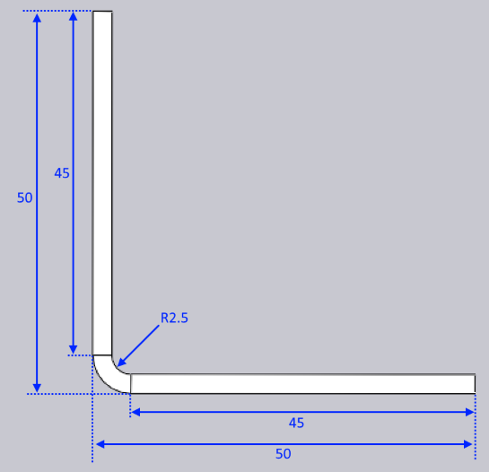

Funkce Přizpůsobit geometrii
Tento dokument vysvětluje tři různé možnosti procesu dostupné s funkcí Přizpůsobit geometrii:

Funkce Přizpůsobit geometrii je vyvolána, když vstupní díl neodpovídá skutečným procesním podmínkám. S dílem může existovat jeden nebo oba z těchto problémů:
-
Vnitřní poloměr ohybů může být příliš malý. Každý proces (jako výkyvné ohýbání nebo ohýbání na ohraňovacím lisu vzduchem) bude mít minimální možný vnitřní poloměr u tohoto procesu. Pokud je konstrukční poloměr dílu menší než tento, díl nemůže být vyroben podle návrhu; poloměr bude nutné změnit.
-
K-faktor ohybové čáry může být nesprávný. Stroj pro zpracování (výkyvné ohýbání vs ohraňovací lis) a procesní nástroje nebo podmínky (razník/matrice/ohýbací nůž/vzduchová mezera) se všechny kombinují a určují skutečný K-faktor ohybu. Ohyb může být navržen s jiným K-faktorem.[1]
Vezměme si jednoduchý 2D díl, který má nesprávný poloměr i nesprávný K-faktor, a podívejme se, jak funkce Přizpůsobit geometrii modifikuje tento díl.

Výše je zobrazen vstupní 2D díl - je to jednoduchý obdélník s jednou ohybovou čárou přesně uprostřed. Šířka dílu je 96,75 mm. Tloušťka materiálu je 2,5 mm
Ohybová čára byla navržena s vnitřním poloměrem 0,5 a K-faktorem 0,5. Šířka v rozloženém stavu (délka neutrální čáry) je tedy:
úhel * (vnitřníPoloměr + kFaktor * tloušťka) = PI/2 * (0,5 + 0,5 * 2,5) = 2,75 mm
Protože se jedná o 90stupňový ohyb, odečtení ohybu je jednoduše:
2 * tloušťka - šířkaRozloženého = 2 * 3 - 2,75 = 3,25 mm
Nic neměnit
Při složení bez jakéhokoli zpracování Přizpůsobit geometrii to tedy vytvoří díl s těmito rozměry:

To je také přesně výsledek, který získáme s možností Nic neměnit. Ani K-faktor, ani poloměr nebyly změněny, což vyústilo v 3D díl, který přesně odpovídá konstrukčnímu záměru 2D výkresu. Pokud je toto nastaveno pro výrobu, výsledný vyrobený díl nebude ve skutečnosti odpovídat těmto rozměrům, hlavně proto, že ohyb vytvořený na stroji se bude lišit jak v poloměru, tak v efektivním K-faktoru od ohybu, který byl navržen. V tomto případě skončíte s dílem, který po výrobě bude trochu menší než 50x50.
Zachovat rozměr rozloženého
Pokud je zvolena tato možnost, TecZone zachová rozměr rozloženého dílu nezměněný, ale označí ohybové čáry správným poloměrem ohybu a K-faktorem. Předpokládejme, že správný poloměr ohybu je 2,5 mm a K-faktor je 0,46 mm. Díl by nyní byl nejprve vnitřně změněn na toto:

Všimněte si, jak celková velikost dílu je nezměněna (stále 96,75 mm) a poloha ohybové čáry je nezměněna. Nicméně, ohyb má nyní poloměr 2,5 a K-faktor 0,46, což znamená, že šířka rozloženého ohybu se zvýšila na 5,73. Ten se nyní složí a vyústí v následující:

Jak vidíte, 2D rozměr dílu je nezměněn, ale 3D rozměr se změnil na 50,51 x 50,51 (z původního konstrukčního rozměru 50 x 50).
Zachovat 3D rozměr
Pokud je zvolena tato možnost, 3D rozměr dílu je nezměněn, ale protože se změní poloměry ohybů a K-faktory, rozložený díl se změní. Při začátku s 2D rozloženým dílem (jako v tomto příkladu) TecZone následuje následující kroky.
-
Složte model do 3D pomocí původního konstrukčního záměru poloměru a K-faktoru. To vyústí v 3D model, který vypadá identicky s modelem na obrázku 2.
-
Nyní změňte poloměr na cílový poloměr 2,5 mm a K-faktor na cílový 0,46. To vyústí v 3D model jako ten níže:

-
Tento model je pak rozložen (pomocí K-faktoru 0,46 pro ohyb) a vyústí v následující rozložený díl:

S touto možností je 3D rozměr zachován na konstrukčním rozměru 50x50. Šířka rozloženého dílu se změnila z 96,75 na 95,73 mm.